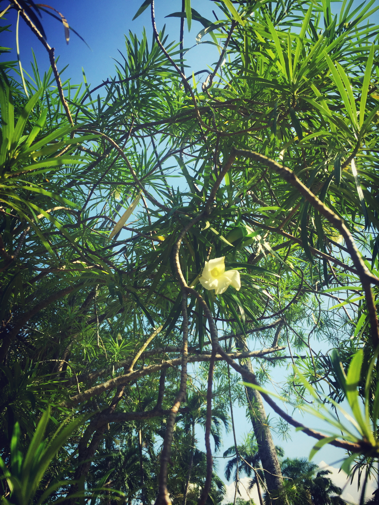
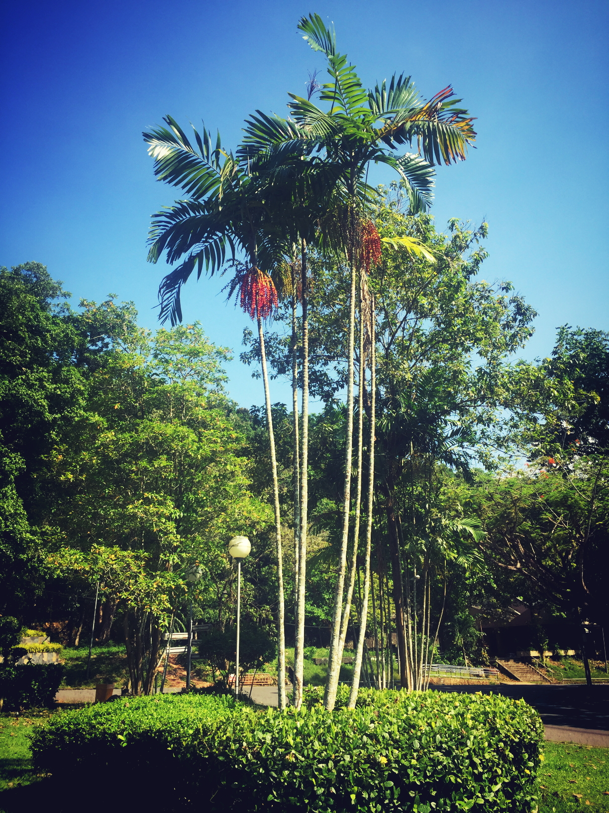

Yellow oleander (ดอกรำเพย)


ข้อมูล
รำเพย (ชื่อวิทยาศาสตร์: Cascabela thevetia Juss. ex Steud.) ชื่ออื่น ๆ คือ ยี่โถฝรั่ง กระบอก เป็นไม้ต้นขนาดเล็ก มีความสูง 2 - 3 เมตร มียางสีขาวเป็นพิษระคายเคืองผิวหนัง ทำให้เกิดผื่นคัน ใบเป็นใบเดี่ยวมีลักษณะใบแคบเรียวยาวคล้ายใบยี่โถ หนาแต่ไม่แข็ง ใบกว้างประมาณ 1 เซนติเมตร ยาวประมาณ 8-12 เซนติเมตร ดอกออกเป็นช่อ ออกทีละ 3-4 ดอกที่ปลายกิ่ง ดอกมีลักษณะเป็นกรวย มีกลีบ 5 กลีบเรียงซ้อนทับกัน โคนดอกเป็นหลอดมีสีอมเขียว มีกลีบเลี้ยง ยาวแหลม 5 กลีบเช่นกัน ดอกมีหลายสี เช่น สีเหลือง ส้ม ขาว เมื่อดอกโรยจะติดผล
ลักษณะ
ไม้พุ่ม สูง 2-3 ม. ทรงพุ่มกลมและโปร่ง แตกกิ่งก้านมาก ทุกส่วนของลำต้นมีน้ำยางสีขาว
ใบ ใบเรียงเวียนสลับ ใบเดี่ยว รูปแถบ กว้างประมาณ 0.7 ซม. ยาว 8-14 ซม. โคนใบแหลม ปลายใบแหลม ขอบใบเรียบ หลังใบสีเขียวเข้มกว่าท้องใบ ผิวเรียบ ก้านใบสั้น
ดอก ดอกช่อออกที่ปลายกิ่ง กลีบเลี้ยงสีเขียวมี 5 กลีบ กลีบดอกสีเหลืองหรือส้มอ่อนหรือขาวมี 5 กลีบ ซ้อนหมุนเป็นเกลียว โคนกลีบดอกเชื่อมติดกันเป็นหลอด เกสรเพศผู้ 5 อัน ติดที่หลอดดอกส่วนใกล้ปากหลอด
ผล ผลสดแบบ drupe รูปสี่เหลี่ยมค่อนข้างกลม มีรอยผ่ากลางเป็นแนว ผลสีเขียว ผิวเรียบ ปลายแหลม เมื่อสุกสีดำ มีเมล็ด 1-2 เมล็ด
ในแต่ละผล